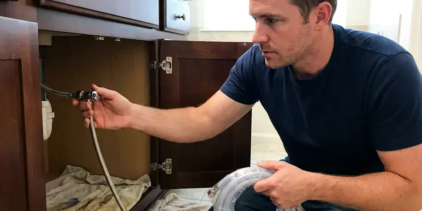
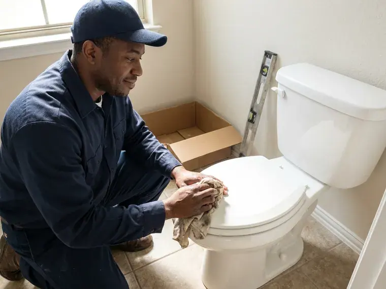

Emergency Plumbing Repair in Sanford, FL
When a plumbing emergency strikes your Sanford, FL home, you need immediate, expert help. HDF Plumbing is ready 24/7 to handle urgent issues like burst pipes or severe clogs.
- Quick Response Day or Night
- Guaranteed Work
- Fast 24/7 Response
- Licensed & Insured

Immediate Plumbing Help Available Now in Sanford, FL.
We answer emergency calls at night, on weekends and on holidays, and we quote before we start.
Your Trusted Partner for Emergency Plumbing Repair in Sanford, FL
When a serious plumbing issue arises in your Sanford home, HDF Plumbing is your first call. We focus on fast emergency plumbing repair, addressing everything from sudden leaks to complete system failures. Our rapid response keeps water damage contained and brings your plumbing system back online safely and efficiently.
Our expertise includes:
- Safe resolution of gas leaks and water heater failures.
- Leaking water heater shutoff, drain-down and replacement
- Rapid response for burst pipes and flooding.

Additional Plumbing Repair Services in Sanford, FL
We offer expert plumbing repair services across Sanford, FL to stop leaks, clear blockages, and keep every fixture working the way it should.



Sanford water leak repair specialists


Customers
Why Choose HDF Plumbing for Emergency Plumbing Repair in Sanford, FL?
We know the stress a plumbing emergency causes, which is why our local Sanford plumbers are always ready to provide skilled solutions with minimal disruption.
- Phone Guidance, We help you find and close the main shutoff or water heater valve right away.
- 24/7 Availability, Plumbing emergencies can happen at any time, so our team is always on call, ready to send a technician to your Sanford location.
- Advanced Tools, We use modern equipment, like hydro-jetting and video pipe inspection, to quickly identify and fix the root cause of your emergency.
Citywide Coverage
HDF Plumbing serves every neighborhood and surrounding area of Sanford, so no matter where you are, fast emergency plumbing repair is just a phone call away. Our local knowledge means we can get around Sanford efficiently to reach you quickly.
Experienced Team
Our emergency plumbers have handled every type of urgent plumbing failure, from burst pipes to sewer backups. They stay calm under pressure and work efficiently.
Safety-First Approach
Plumbing emergencies can involve electricity, gas and contaminated water. We shut off utilities as needed and use protective equipment and containment.
Trusted Certified Sanford Plumbing Services Professionals
At HDF Plumbing, we take pride in providing certified plumbing services throughout Sanford, FL. Backed by recognized industry credentials, our experienced plumbers combine technical skill with genuine customer care. Whether it is repair, installation, or maintenance, we follow strict safety and quality standards to deliver long-lasting results you can trust.
Call Us Now PHCC Plumbing Contractor Recognition
PHCC Plumbing Contractor Recognition Better Business Bureau (BBB) Accreditation
Better Business Bureau (BBB) Accreditation Angi Certified Pro
Angi Certified Pro ISO 9001 Quality Management Certification
ISO 9001 Quality Management CertificationReliable Emergency Plumbing Repair Services in Sanford, FL
Severe Clog Removal in Sanford, FL
A severe drain or sewer line clog can cause immediate backups, posing health risks and real inconvenience. Our emergency plumbing repair team uses advanced tools like hydro-jetting and augers to clear stubborn blockages caused by grease buildup, foreign objects, or tree root intrusion. We address the root cause of the clog to prevent recurrence so your drainage system in Sanford, FL flows freely.

Gas Leak Emergency Response in Sanford
If you smell gas, leave the home immediately and call your gas utility or 911 from outside. Once the area is safe, our licensed plumbers can find and repair gas line leaks at water heaters, ranges, dryers and outdoor appliances. We pressure test the system before restoring service. Never ignore the smell of gas.
Commercial Emergency Plumbing Repair in Sanford
Restaurants, offices, retail stores and apartment buildings cannot afford downtime from a plumbing failure. We respond to commercial emergencies quickly and work to restore service with minimal disruption. That includes restroom backups, grease line clogs and failed water heaters. We work closely with property managers and owners.
Main Water Line Break in Sanford, FL
A broken main water line can flood a yard or leave you with no water at all. We help you shut off water at the meter and send a crew to locate and repair the break. We use leak detection equipment to limit digging. Service is restored as quickly as possible.
Burst Pipe Emergency Repair in Sanford
A burst pipe can release several gallons per minute into walls, ceilings or floors. Common causes include high pressure, corrosion, physical damage and freezing weather. We help you shut off the main valve, then find and repair the damaged section. We also check pressure and nearby pipes to prevent another burst.
Gas Leak Emergency Service in Sanford
A gas leak is a serious and potentially dangerous emergency that demands immediate professional attention. If you smell gas, evacuate and call us immediately. Our certified plumbers in Sanford use specialized equipment to detect the exact location of the leak, perform the needed repairs or replacements of gas lines and fittings, and make sure your system is safe and up to code before restoring service.
Commercial Emergency Plumbing in Sanford
Businesses in Sanford rely on working plumbing, and an emergency can halt operations and impact profitability. HDF Plumbing offers fast emergency plumbing repair for commercial properties, handling issues like large-scale drain blockages, commercial water heater failures, or industrial pipe bursts. We know the demands of commercial systems and work efficiently to limit downtime and get your business back on track.

Slab Leak Emergency Repair in Sanford
Slab leaks, common in homes built on concrete foundations, can cause extensive damage and go undetected until significant issues arise. Our emergency service uses non-invasive leak detection technology to locate hidden leaks under your foundation. We offer options for repair, including direct access, rerouting, or trenchless methods, to stop the leak and prevent further foundation shifts or water damage to your Sanford property.
Emergency Plumbing Repair Near Me in Sanford, FL
Don't waste time searching for 'emergency plumber near me' when every minute counts. HDF Plumbing offers dependable, fast-response emergency plumbing repair across the Sanford area. Our local knowledge allows us to arrive quickly and address your plumbing emergency, minimizing inconvenience and potential damage.
When you search for emergency plumbing repair near me, you need someone who answers and shows up fast. Our local plumbers are ready day and night to respond to urgent plumbing problems. We arrive with the tools and parts to fix most issues in one visit.
HDF Plumbing at a Glance
- Licensed and insured plumbers serving Sanford, FL
- 24/7 emergency service with same-day scheduling
- Upfront, flat-rate pricing before work begins
- 4.9-star rated by 739+ Florida customers
Sanford Map
Sanford Information
- Population
- 65,394
- Area codes
- 407/321/689
- Service area
- Sanford and communities within 40 miles
- Nearby
- Deltona, University, Apopka, Pine Hills
Weather extremes strain water heaters and supply lines in Sanford, FL, and hard freezes or heavy downpours can trigger burst pipes and sewer backups with little warning. Heavy afternoon thunderstorms are common in summer, and saturated ground can push water into sewer lines and slow every fixture in the house.
Expert Services
Trust our professionals for reliable HDF Plumbing solutions in Sanford, FL.
Our Specialized Plumbing Services in Sanford, FL
At HDF Plumbing, we provide a complete range of plumbing services across Sanford, FL. From leak detection to full system installations, our team ensures fast, precise, and affordable service for both residential and commercial properties. Explore our core services below:


How Our Emergency Plumbing Repair Process Works in Sanford, FL
When you call HDF Plumbing for an emergency plumbing repair in Sanford, we start a streamlined process to get help to you as quickly as possible.
Request a Quote
Call (904) 925-7356 and tell us what is happening, and we will help you shut off water or gas right away. We dispatch a plumber right away.
Stabilize the Situation
On arrival, we stop the leak or backup and assess the damage. We give you a written price for the repair before starting.
Repair and Restore
We make the repair, test the system and restore service. We clean up and explain how to prevent a repeat emergency.
Frequently Asked Questions About Emergency Plumbing Repair in Sanford
Emergency plumbing repair costs in Sanford, FL can vary widely based on the complexity and type of repair. Simple fixes like a minor leak might range from $150 to $400, while more complex issues like a burst main pipe or sewer line repair could be $500 to $2,000 or more. We always provide upfront pricing before any work starts.
A plumbing emergency usually involves situations that pose an immediate threat to your property or health. This includes burst pipes, severe leaks causing flooding, sewer backups, gas leaks, or a complete lack of water or hot water. If it can't wait until morning, it's an emergency.
Yes. Emergency repairs carry the same written workmanship warranty as scheduled work, and materials carry manufacturer warranties.
In many homes, the main shutoff is near the front hose bib, in a basement or utility area, or where the water line enters the house. You can also shut water off at the meter box near the street with a meter key. We can show you where yours is.
Major leaks, especially slab leaks, can saturate the ground beneath your home, leading to foundation shifting or cracking if not fixed promptly. A high water table across much of Florida affects drainage, septic design, and how deeply crews can dig for underground repairs. Our emergency repairs aim to stop the leak and reduce potential foundation damage by quickly drying out affected areas.
Many homeowner policies cover sudden water damage from burst pipes or appliance failures. We provide documentation and photos to help with your claim.
Yes, HDF Plumbing stands behind the quality of our emergency plumbing repair work. We offer a warranty on both parts and labor for all repairs performed. Specific warranty details will be discussed with you by your technician before work begins, providing peace of mind in Sanford, FL.
If you suspect a gas leak, immediately evacuate everyone from the property, including pets. Do not use light switches, phones, or anything that could create a spark. Once safely outside, call 911 and then HDF Plumbing at (904) 925-7356. We will send a licensed plumber for emergency gas leak detection and repair.
What People Are Saying About Our Plumbing Experts?

Daniel K.
A pipe burst at 11 pm and they actually answered. The plumber showed up within the hour, shut everything down, and had us back to normal the next morning. Could not ask for more.
Emergency Plumbing · Orlando, FL
Laura S.
I scheduled a water heater replacement, and the team made the process smooth and affordable. The new unit works perfectly, and they cleaned up after completing the job.
Water Heater Replacement · Pine Hills, FL
Patricia H.
We had a slab leak that two other companies could not find. HDF Plumbing located it in under an hour, explained our options, and the price matched the quote to the dollar.
Slab Leak Repair · Pine Hills, FL
Robert G.
The trenchless sewer replacement saved our front yard. They walked us through the camera inspection footage first so we knew exactly what we were paying for.
Sewer Line Replacement · Alafaya, FL
Mark T.
When our office needed drain cleaning, HDF Plumbing provided quick, reliable service. The plumber arrived on time and made sure every drain flowed perfectly before leaving. Very satisfied.
Drain Cleaning · Orlando, FL
Emily R.
I called HDF Plumbing for plumbing repair, and the technician was fast, polite, and thorough. They explained the problem clearly and fixed it the same day. I will definitely hire them again. Highly recommended!
Plumbing Repair · Pine Hills, FL